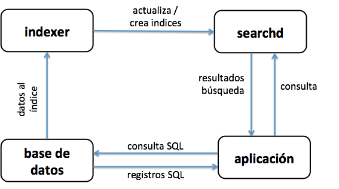
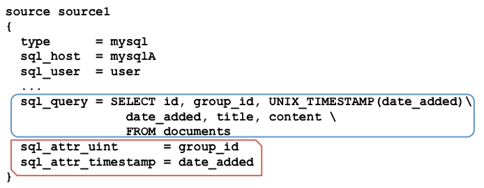
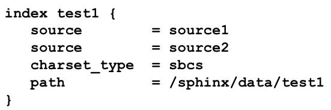
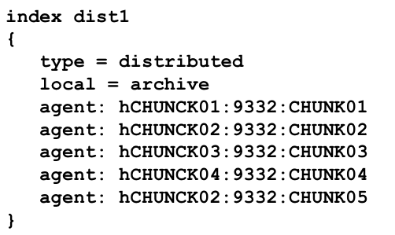

Your browser doesn't support the features required by impress.js, so you are presented with a simplified version of this presentation.
For the best experience please use the latest Chrome or Safari browser. Firefox 10 (to be released soon) will also handle it.
Mysql meetup
intro a Sphinx
- Qué es / Para qué?
- cómo funciona
- Indexando datos
- Actualizando datos
- demo!
- motor de búsqueda full text (FOSS)
- diseñado para indexar bases de datos
- bajo el paradigma de SQL
porqué?
- > velocidad de indexación / búsqueda
- > escalabilidad
- mejor relevancia
otras razones
- "faceted" searching - morfología
- Geo-distancia - HTML stripper
- etc, etc, etc...
dos programas
- - indexer consulta la BD, crea indices
- - searchd usa los indices, responde consultas
programas cliente
- - API nativa php, python, java, ruby...
- - SphinxSE MySql Engine
Orígenes de datos
Mysql, PgSql, XML pipes (mongodb,...)
Indices
morfología, stopwords, wordforms, exceptions, charset, html strip...
Tipos
disk based, distribuidos, tiempo real
workflow

a los bifes: Data source

índice local

índice distribuido

remotos se consultan en paralelo.
se devuelve un único resultado.
Actualizando
indexer --rotate --all
¿qué indexo?
todo o solo lo nuevo